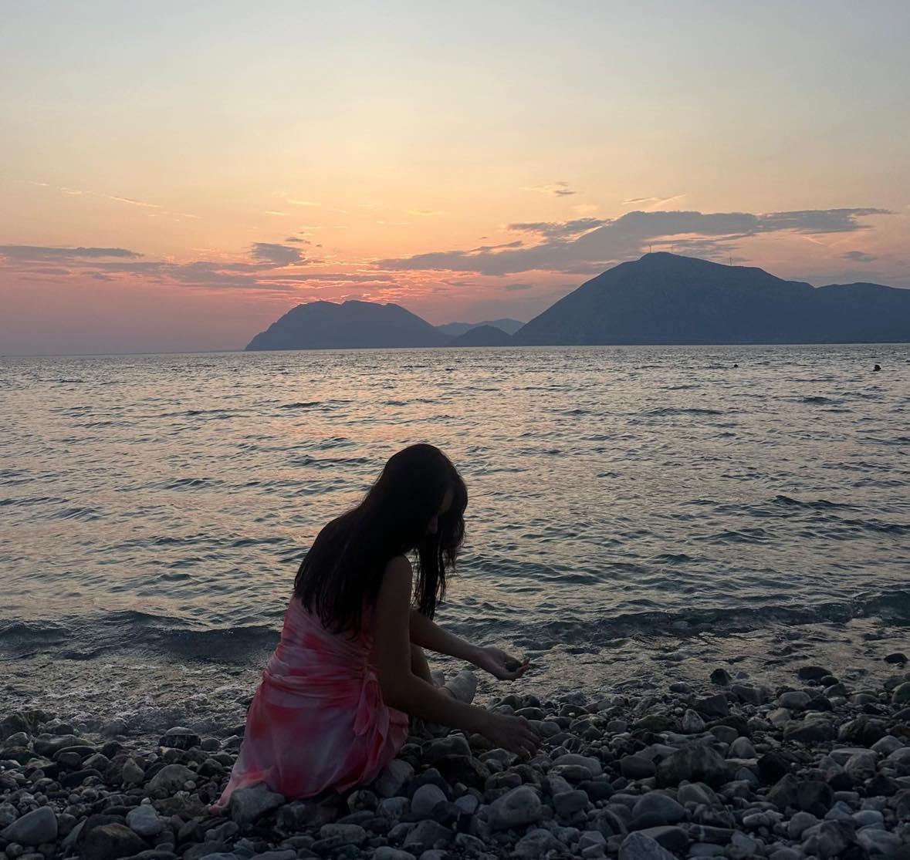
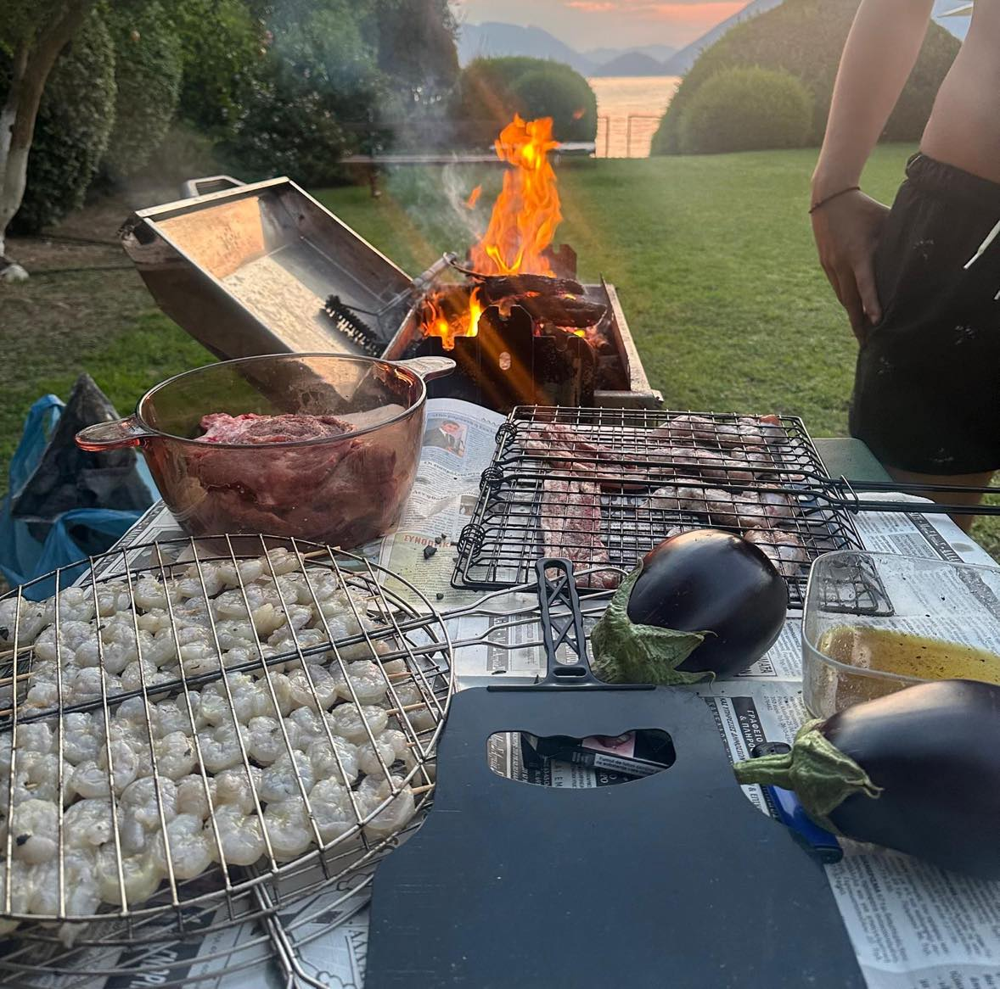

Hello, I’m Christiana!
My home is Cluj-Napoca, Romania.
My home is Cluj-Napoca, Romania.
I'm an Artificial Intelligence student at the University Babeș-Bolyai, wishing to succeed in my IT career. I am new to some of the concepts of developing web pages, but I aspire to gain skills in web design and be great at it. I have finished high school at the mathematics and informatics profile and I have seen myself working in the IT industry from 8th grade.
I am passionate about acquiring new knowledge; it stimulates my intellect, satisfies my curiosity, and consistently expands my comprehension of various subjects.
I am keen on learning various skills in web design and software developments using various languages like:
My goals is to open my own company that is working on developing the security branch of IT.
As a passionate photographer and avid traveler, I capture the world through my lens while exploring diverse cultures. My culinary skills, honed from my father and his mother, turn every dish into a masterpiece. Eager to travel far and wide, I aim to experience and document every culture through food and photography.
 